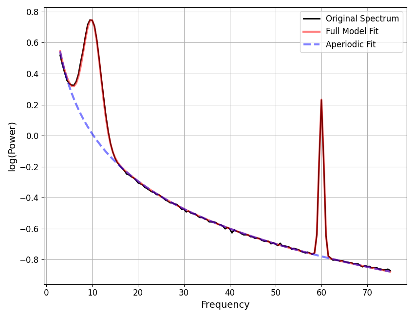

Note
Go to the end to download the full example code.
Dealing with Line Noise¶
This example covers strategies for dealing with line noise.
# Import the spectral parameterization object and utilities
from fooof import FOOOF
from fooof.plts import plot_spectra
from fooof.utils import trim_spectrum, interpolate_spectrum
# Import simulation functions to create some example data
from fooof.sim.gen import gen_power_spectrum
# Import NeuroDSP functions for simulating & processing time series
from neurodsp.sim import sim_combined
from neurodsp.filt import filter_signal
from neurodsp.spectral import compute_spectrum
Line Noise Peaks¶
Neural recordings typically have power line artifacts, at either 50 or 60 Hz, depending on where the data were collected, which can impact spectral parameterization.
In this example, we explore some options for dealing with line noise artifacts.
Interpolating Line Noise Peaks¶
One approach is to interpolate away line noise peaks, in the frequency domain. This approach simply gets rid of the peaks, interpolating the data to maintain the 1/f character of the data, allowing for subsequent fitting.
The interpolate_spectrum() function allows for doing simple
interpolation. Given a narrow frequency region, this function interpolates the spectrum,
such that the ‘peak’ of the line noise is removed.
# Generate an example power spectrum, with line noise
freqs1, powers1 = gen_power_spectrum([3, 75], [1, 1],
[[10, 0.75, 2], [60, 1, 0.5]])
# Visualize the generated power spectrum
plot_spectra(freqs1, powers1, log_powers=True)
In the plot above, we have an example spectrum, with some power line noise.
To prepare this data for fitting, we can interpolate away the line noise region.
# Interpolate away the line noise region
interp_range = [58, 62]
freqs_int1, powers_int1 = interpolate_spectrum(freqs1, powers1, interp_range)
# Plot the spectra for the power spectra before and after interpolation
plot_spectra(freqs1, [powers1, powers_int1], log_powers=True,
labels=['Original Spectrum', 'Interpolated Spectrum'])
As we can see in the above, the interpolation removed the peak from the data.
We can now go ahead and parameterize the spectrum.
# Initialize a power spectrum model
fm1 = FOOOF(verbose=False)
fm1.report(freqs_int1, powers_int1)
==================================================================================================
FOOOF - POWER SPECTRUM MODEL
The model was run on the frequency range 3 - 75 Hz
Frequency Resolution is 0.50 Hz
Aperiodic Parameters (offset, exponent):
1.0330, 1.0198
1 peaks were found:
CF: 10.03, PW: 0.732, BW: 3.81
Goodness of fit metrics:
R^2 of model fit is 0.9996
Error of the fit is 0.0060
==================================================================================================
Multiple Interpolation Regions¶
Line noise artifacts often also display harmonics, such that when analyzing broader frequency ranges, there may be multiple peaks that need to be interpolated.
This can be done by passing in multiple interpolation regions to
interpolate_spectrum(), which we will do in the next example.
# Generate an example power spectrum, with line noise & harmonics
freqs2, powers2 = gen_power_spectrum([1, 150], [1, 500, 1.5],
[[10, 0.5, 2], [60, 0.75, 0.5], [120, 0.5, 0.5]])
# Interpolate away the line noise region & harmonics
interp_ranges = [[58, 62], [118, 122]]
freqs_int2, powers_int2 = interpolate_spectrum(freqs2, powers2, interp_ranges)
# Plot the power spectrum before and after interpolation
plot_spectra(freqs2, [powers2, powers_int2], log_powers=True,
labels=['Original Spectrum', 'Interpolated Spectrum'])
# Parameterize the interpolated power spectrum
fm2 = FOOOF(aperiodic_mode='knee', verbose=False)
fm2.report(freqs2, powers_int2)
==================================================================================================
FOOOF - POWER SPECTRUM MODEL
The model was run on the frequency range 1 - 150 Hz
Frequency Resolution is 0.50 Hz
Aperiodic Parameters (offset, knee, exponent):
0.9626, 449.6099, 1.4835
1 peaks were found:
CF: 10.03, PW: 0.493, BW: 3.82
Goodness of fit metrics:
R^2 of model fit is 0.9994
Error of the fit is 0.0046
==================================================================================================
Fitting Line Noise as Peaks¶
In some cases, you may also be able to simply allow the parameterization to peaks to the line noise and harmonics. By simply fitting the line noise as peaks, the model can deal with the peaks in order to accurately fit the aperiodic component.
These peaks are of course not to be analyzed, but once the model has been fit, you can simply ignore them. There should generally be no issue with fitting and having them in the model, and allowing the model to account for these peaks typically helps the model better fit the rest of the data.
Below we can see that the model does indeed work when fitting data with line noise peaks.
# Fit power spectrum models to original spectra
fm1.report(freqs1, powers1)
fm2.report(freqs2, powers2)
- 
==================================================================================================
FOOOF - POWER SPECTRUM MODEL
The model was run on the frequency range 3 - 75 Hz
Frequency Resolution is 0.50 Hz
Aperiodic Parameters (offset, exponent):
1.0312, 1.0188
2 peaks were found:
CF: 10.03, PW: 0.733, BW: 3.82
CF: 60.00, PW: 1.009, BW: 1.00
Goodness of fit metrics:
R^2 of model fit is 0.9997
Error of the fit is 0.0061
==================================================================================================
==================================================================================================
FOOOF - POWER SPECTRUM MODEL
The model was run on the frequency range 1 - 150 Hz
Frequency Resolution is 0.50 Hz
Aperiodic Parameters (offset, knee, exponent):
0.9604, 447.9095, 1.4820
3 peaks were found:
CF: 10.02, PW: 0.494, BW: 3.84
CF: 60.00, PW: 0.754, BW: 1.00
CF: 120.00, PW: 0.501, BW: 0.99
Goodness of fit metrics:
R^2 of model fit is 0.9995
Error of the fit is 0.0045
==================================================================================================
The Problem with Bandstop Filtering¶
A common approach for getting rid of line noise activity is to use bandstop filtering to remove activity at the line noise frequencies. Such a filter effectively set the power of these frequencies to be approximately zero.
Unfortunately, this doesn’t work very well with spectral parameterization, since the parameterization algorithm tries to fit each power value as either part of the aperiodic component, or as an overlying peak. Frequencies that have filtered out are neither, and the model has trouble, as it and has no concept of power values below the aperiodic component.
In practice, this means that the “missing” power will impact the fit, and pull down the aperiodic component. One way to think of this is that the power spectrum model can deal with, and even expects, ‘positive outliers’ above the aperiodic (these are considered ‘peaks’), but not ‘negative outliers’, or values below the aperiodic, as there is no expectation of this happening in the model.
In the following example, we can see how bandstop filtering negatively impacts fitting. Because of this, for the purposes of spectral parameterization, bandstop filters are not recommended as a way to remove line noise.
Note that if one has already applied a bandstop filter, then you can still apply the interpolation from above.
# General settings for the simulation
n_seconds = 30
fs = 1000
# Define the settings for the simulated signal
components = {'sim_powerlaw' : {'exponent' : -1.5},
'sim_oscillation' : [{'freq' : 10}, {'freq' : 60}]}
comp_vars = [0.5, 1, 1]
# Simulate a time series
sig = sim_combined(n_seconds, fs, components, comp_vars)
# Bandstop filter the signal to remove line noise frequencies
sig_filt = filter_signal(sig, fs, 'bandstop', (57, 63),
n_seconds=2, remove_edges=False)
# Compute a power spectrum of the simulated signal
freqs, powers_pre = trim_spectrum(*compute_spectrum(sig, fs), [3, 75])
freqs, powers_post = trim_spectrum(*compute_spectrum(sig_filt, fs), [3, 75])
# Plot the spectrum of the data, pre and post bandstop filtering
plot_spectra(freqs, [powers_pre, powers_post], log_powers=True,
labels=['Pre-Filter', 'Post-Filter'])
In the above, we can see that the the bandstop filter removes power in the filtered range, leaving a “dip” in the power spectrum. This dip causes issues with subsequent fitting.
FOOOF WARNING: Lower-bound peak width limit is < or ~= the frequency resolution: 0.50 <= 1.00
Lower bounds below frequency-resolution have no effect (effective lower bound is the frequency resolution).
Too low a limit may lead to overfitting noise as small bandwidth peaks.
We recommend a lower bound of approximately 2x the frequency resolution.
==================================================================================================
FOOOF - POWER SPECTRUM MODEL
The model was run on the frequency range 3 - 75 Hz
Frequency Resolution is 1.00 Hz
Aperiodic Parameters (offset, exponent):
-1.0458, 1.9117
1 peaks were found:
CF: 10.11, PW: 2.640, BW: 1.92
Goodness of fit metrics:
R^2 of model fit is 0.6638
Error of the fit is 0.3261
==================================================================================================
In order to try and capture the data points in the “dip”, the power spectrum model gets ‘pulled’ down, leading to an inaccurate fit of the aperiodic component. This is why fitting frequency regions that included frequency regions that have been filtered out is not recommended.
Total running time of the script: (0 minutes 1.951 seconds)